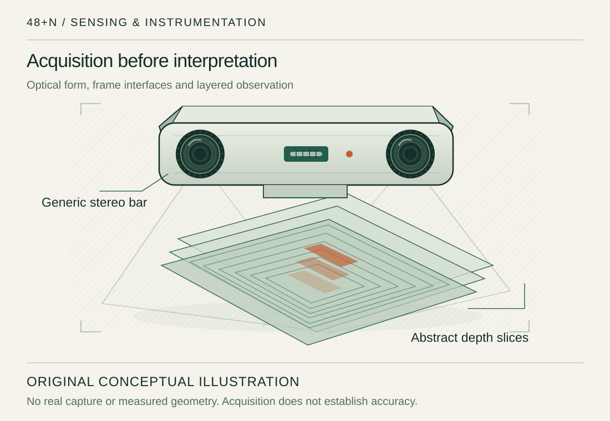
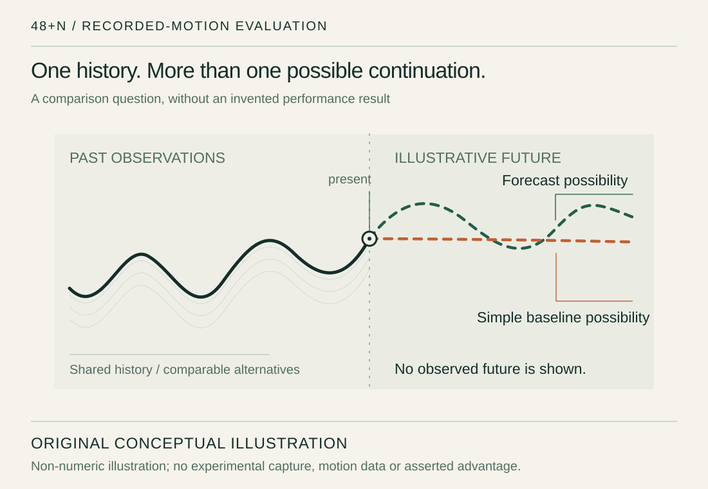
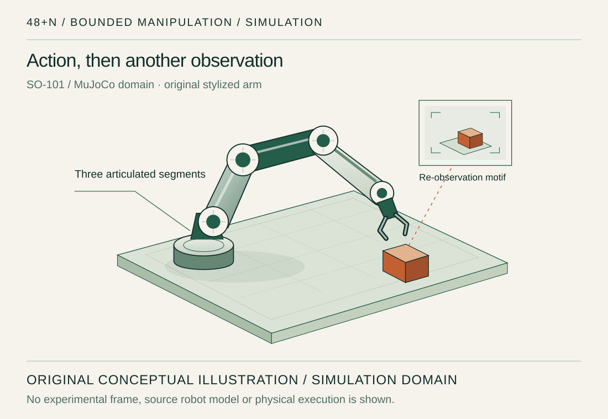
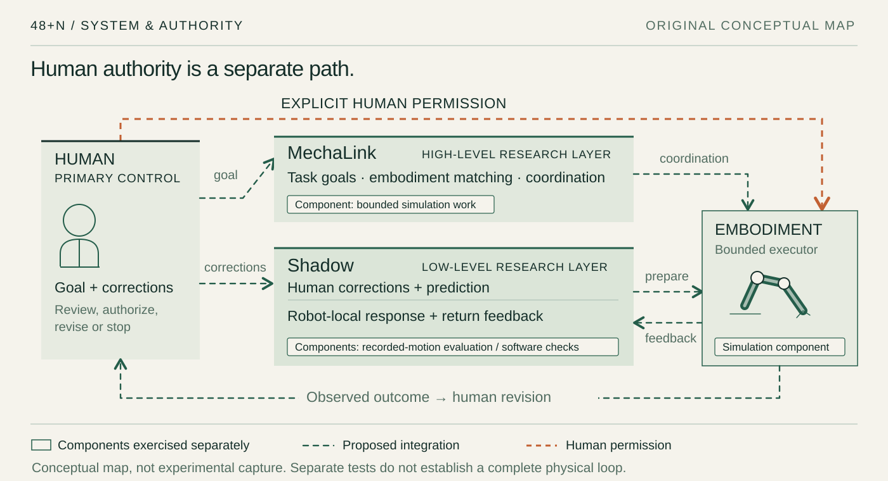

I am developing 48+N as an ongoing research programme in human-directed embodied intelligence. Its two core directions connect low-level human–robot interaction with task decisions across different robotic bodies.
ShadowResearching a bidirectional low-level loop: human corrections, prediction, robot-local response and protection, and continuous feedback.
MechaLinkResearching task meaning, embodiment-aware capability allocation, and human-directed revision during execution.
Original concept illustration, not an experimental capture. The proposed complete physical human–robot loop remains unestablished.
Real devicesSensing interfaces
RGB-D acquisition and software/timing checks. Independent accuracy still needs qualification.
Recorded motionForecasts & baselines
Implemented analysis. Input availability and the measurement reference affect interpretation.
Controlled simulationTasks & re-observation
Bounded SO-101 MuJoCo work. This is separate from physical-robot execution.
01 / Selected engineering
Three domains. Different kinds of evidence.
The research has working components, specific test settings and unresolved questions. Each case below separates the engineering record from the illustration used to explain it.
These are separate evidence streams, not a completed physical human-to-robot evaluation. All new graphics on this page are original conceptual illustrations; they contain no participant records, measured trajectories or experimental screenshots.

Concept illustration / real-sensing domain. A generic instrumentation drawing, not a camera frame or a geometric validation result.
01Real sensing record
Start with what the camera gives you.
Real RGB-D observations have been acquired with D455/D435i cameras. Frame, timing and software interfaces have been exercised, including a limited native camera-to-prediction-to-software-consumer path.
Acquisition is an engineering result. Independent geometric and anatomical accuracy remain unqualified, and deployment input quality and timing remain material limits.
Read the test boundary
A returned frame is not a validated joint position. Software continuity, a meaningful measurement reference and an observed physical outcome require different checks. The portfolio does not join the separate sensor, prediction and simulation records into one completed physical loop.

Non-numeric concept illustration. Designed paths explain a comparison question; neither curve is a result or a claim of greater accuracy.
02Recorded-data evaluation
A forecast needs a fair comparison.
GRU-based motion forecasts have been evaluated against simple baselines using recorded motion. The analysis treats input availability, reference quality and baseline choice as part of the result.
Measured-reference error does not establish anatomical truth. Consistent advantage over strong simple baselines, independent measurement validity and population generalization remain open.
What would make prediction useful?
The research asks whether preparation changes a meaningful task outcome beyond a strong ordinary baseline. Forecasting, anticipation, permission, applied action and observed outcome are distinct claims; reliable anticipation and integrated physical-loop benefit have not been established.

Concept illustration / simulation domain. SO-101 and MuJoCo describe the research context; this drawing is not an experimental frame.
03Bounded MuJoCo work
Realize a task. Then look again.
Ordinary SO-101 control in MuJoCo has exercised grasp, lift, transport, placement and retreat. Rendered RGB-D re-observation informed updated target estimates in controlled tabletop cases.
Generated operator-command checks also exercised bounded correction, HOLD and resulting simulated motion and settling.
Simulation only, with known scene geometry and simulator ground-truth contact checks. HOLD is not instantaneous. Real-time operation, human-study benefit and physical-robot advantage have not been established.
What the simulation does not settle
These checks provide bounded task and software engineering evidence. A distinct high-level method advantage over strong ordinary controllers, broader transfer and a complete human-to-physical-robot loop remain unproven.
Shadow and MechaLink address different scales of coordination. The map is a conceptual relationship between research roles, not a specification of private controllers or proof of completed integration.
ORIGINAL CONCEPTUAL MAP / proposed integration ≠ tested complete loopOn a narrow screen, scroll the diagram sideways.

Human authorization is separate from predictive preparation. Component tests have their own evidence; the dashed proposed relationships do not establish a complete physical closed loop. The role descriptions below provide a text equivalent.
Low-level research
Shadow / a continuing exchange
Human reactions and corrections, short-horizon prediction, robot-local response and protection, and feedback to the operator form its intended scope. Recorded-motion evaluation, software integration and generated-command simulation checks exercise components; they do not validate the complete physical loop or certify safety.
Task & embodiment research
MechaLink / meaning before movement
Human task goals and revision, task semantics, embodiment capabilities and authorised realization define this research role. Bounded simulated task and visual re-observation engineering exist; distinct high-level method superiority and arbitrary cross-body generalization remain unproven.
Prediction supplies preparation, not permission.
The person supplies the goal and remains the source of task authority. Expected states and observed outcomes must stay distinct.
03 / Research today
Two research directions. One continuing programme.
I develop these connected directions through working prototypes, separate experiments and questions grounded in physical outcomes.
Work in progress across two main lines. Shadow investigates low-level human–robot feedback and prediction; MechaLink investigates how human task decisions, revisions and robot capabilities shape action. Supporting research covers RGB-D sensing, input quality, weak-link behaviour, robot re-observation and controlled manipulation. Two separate robotics papers are in preparation, including a Shadow study targeting IEEE RA-L; these are active research efforts, not completed submissions.
Built & exercised
Specific components
Real sensing software, recorded-motion comparisons and controlled SO-101 simulation provide the engineering base.
Separate test settings
Ordinary baselines retained
Original research material withheld
Still unresolved
Independent usefulness
Measurement validity, reliable anticipation and added value beyond strong baselines are not settled by those checks.
Independent reference quality
Broader conditions and participants
Meaningful downstream outcomes
Evidence needed next
Physical evaluation
Separately authorized hardware and integrated evaluation would be needed before making a physical-loop benefit claim.
These qualifications are part of the research account. A new visual design does not change the strength or scope of the existing results.
Measurement is not ground truth.
A shared measured reference, exposed development session or returned camera frame does not establish independent anatomical truth, prospective population generalization or robust validity across operating conditions.
Simulation is a bounded setting.
Known scene geometry and simulator ground-truth contact checks remain relevant. Generated-command software checks are not a formal human study, certified real-time control, failure coverage or physical safety validation.
Integration is a separate claim.
Real sensing, forecasting and simulated execution cannot be joined into a purported completed human-to-physical-robot result. Physical-loop benefit and arbitrary embodiment transfer have not been demonstrated.
Method advantage must be earned.
Strong ordinary baselines are part of the comparison. A distinct high-level method advantage is unproven; unsuccessful comparisons are not hidden by a favorable subset. Robotics manuscripts remain in preparation, with no submission or acceptance claimed.
Detailed implementations, thresholds, state machines, original measurements and manuscript figures remain private. Read the complete methods and limitations before interpreting the architecture.
05 / Contribution & context
Independent research, through design and engineering.
46 +2 +N
A design metaphor: the 46 chromosomes typical of human somatic cells; two functional research layers; possible additional bodies, tools and capabilities. It does not mean people have 48 chromosomes or that unlimited robot skills exist. The name was partly inspired by Tool’s Forty Six & 2; no artwork or lyrics are used.
I independently conceived, designed, implemented and evaluated this research, including data collection, experimental operation and interpretation. No other student or faculty researcher co-developed it.
MuJoCo, TheRobotStudio SO-101 designs, MuJoCo Menagerie, LeRobot and established sensing and numerical tools retain their upstream authorship. The portfolio text and original illustrations were prepared with AI assistance; they do not reproduce private research implementations or records.
No general reuse license has been granted. This portfolio is a public-level overview, not an original source or data release.